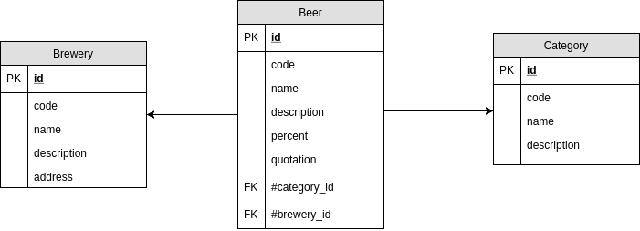

The worst best idea: Doing batch with PHP and Doctrine
Romain Monceau
 @RomainMonceau
@RomainMonceau
25 years old
+15 years PHP
Lead Developer @Akeneo
Zytholophile
- PHP 7
- MySQL
- Symfony 3.3
- Doctrine
- PHP 7
- MySQL
- Symfony 3.3
- Doctrine
Toute relation avec des projets existants ou ayant existés étant absolument fait exprès
PHP n'est pas fait pour faire du batch
Attention à la consommation mémoireComparaison avec le fonctionnement d'autres langages type Java?
Doctrine n'est pas fait pour le batch
Présentation du model
Doctrine mapping: Beer.orm.yml
BeerBundle\Entity\Beer:
type: entity
table: beer
fields:
id:
[...]
code:
[...]
name:
[...]
description:
[...]
percent:
[...]
quotation:
[...]Doctrine mapping: Beer.orm.yml
BeerBundle\Entity\Beer:
type: entity
table: beer
manyToOne:
brewery:
targetEntity: BeerBundle\Entity\Brewery
joinColumn:
name: brewery_id
referencedColumnName: id
category:
targetEntity: BeerBundle\Entity\Category
joinColumn:
name: category_id
referencedColumnName: id
How doing batch?
Développer cette présentation générale! 1 entity à la foisReader
public function __construct($filepath) {
$this->fd = fopen($filepath, 'r+');
$this->headers = fgetcsv($this->fd, null, ';');
}
public function read() {
$row = fgetcsv($this->fd, null, ';');
if (false === $row) {
return null;
}
return array_combine($this->headers, $row);
}
public function __destruct() {
fclose($this->fd);
}Processor
$category = $this->findOrCreateCategory($item['code']);
$category->setName($item['name']);
$category->setDescription($item['description']);
return $category;Writer
$writeCount = 0;
foreach ($items as $item) {
$violations = $this->validator->validate($item);
if ($violations->count() === 0) {
$this->em->persist($item);
$writeCount++;
} else {
foreach ($violations as $violation) {
CommandLogger::error(...);
}
}
}
$this->em->flush();Import breweries (500 lines)
> bin/console batch:import:brewery breweries.csv
Start: Memory: 12.58M
End: Time: 25.77s - Memory: 29.36M - Diff: 16.78M> bin/console batch:import:brewery breweries.csv --env=prod
Start: Memory: 10.49M
End: Time: 22.2s - Memory: 20.97M - Diff: 10.48MWhat is happening?
DEBUG: "START TRANSACTION" [] []
DEBUG: INSERT INTO brewery [...] []
DEBUG: "COMMIT" [] []
DEBUG: SELECT [...] FROM brewery b0_ WHERE b0_.code LIKE 'omnis-sed'
DEBUG: SELECT [...] FROM brewery t0 WHERE t0.code = ? ["omnis-sed"]
DEBUG: "START TRANSACTION" [] []
DEBUG: INSERT INTO brewery [...] []
DEBUG: "COMMIT" [] []Step 1: Batch size 100
[Doctrine\DBAL\Exception\UniqueConstraintViolationException]
[Doctrine\DBAL\Driver\PDOException]
[PDOException]
SQLSTATE[23000]: Integrity constraint violation:
1062 Duplicate entry 'id-quia' for key 'searchunique_idx'1 schéma avant
1 schéma après
Step 2: Create validator
class UniqueEntityCodeValidator extends ConstraintValidator {
private $codeSet = [];
public function validate($entity, Constraint $constraint) {
if (isset($this->codeSet[$entity->getCode()])) {
$this->context
->buildViolation($constraint->message)
->setParameter('%unique_code%', $entity->getCode())
->addViolation();
return;
}
$this->codeSet[$entity->getCode()] = $entity->getCode();
}
}Relaunch the import now!
Start: Memory: 10.49M
Entity "id-quia" not valid:
The value "id-quia" is already set in another entity
1000 entity written
End: Time: 1.79s - Memory: 20.97M - Diff: 10.48MStart: Memory: 10.49M
1001 entity written
End: Time: 22.2s - Memory: 20.97M - Diff: 10.48MStep 3: Update breweries
Autre fichier avec 1 ligneThis file contains a name longer than expected
bin/console batch:import:brewery breweries_update.csv --env=prod
Memory: 10.49M
Entity "id-quia" not valid: This value is too long.
It should have 100 characters or less.
0 entity written
[Doctrine\DBAL\Exception\DriverException]
[Doctrine\DBAL\Driver\PDOException]
[PDOException]
SQLSTATE[22001]: String data, right truncated:
1406 Data too long for column 'name' at row 1What about the writer
Schéma step 3Change Tracking Policy
http://docs.doctrine-project.org/projects/doctrine-orm/en/latest/reference/change-tracking-policies.html"It is the process of determining what has changed in managed entities since the last time they were synchronized with the db"
- Deferred implicit (default)
- Deferred explicit
- Notify
Deferred explicit implementation
BeerBundle\Entity\Brewery:
type: entity
table: brewery
repositoryClass: BeerBundle\Entity\Repository\EntityRepository
changeTrackingPolicy: DEFERRED_EXPLICITImport beers (10000 lines)
bin/console batch:import:beer beers_10k.csv --env=prod
Start: Memory: 10.49M
10000 entity written
End: Time: 20.18s - Memory: 92.27M - Diff: 81.78MImport beers (20000 lines)
bin/console batch:import:beer beers_20k.csv --env=prod
PHP Fatal error:
Allowed memory size of 134217728 bytes exhausted
(tried to allocate 20480 bytes)Explanation memory leak problems
Increase memory usageDecrease performance
GC is run more often and for nothing because it is not able to free memory
It leads to an increase of CPU usage of the process
php-meminfo
Free & open source PHP extensionhttps://github.com/BitOne/php-meminfo
Give insight about PHP memory content
php-meminfo: How it works?
Dump memory usingmeminfo_info_dump(fopen('/tmp/doctrine_batch.log', 'w'));Have summary by object types
$ bin/analyzer summary /tmp/doctrine_batch.log| Type | Instances Count | Cumulated Self Size (bytes) |
| BeerBundle\Entity\Brewery | 21000 | 1512000 |
| BeerBundle\Entity\Category | 20139 | 1450008 |
| Doctrine\ORM\Query\ResultSetMapping | 11145 | 802440 |
| Doctrine\ORM\Query\ParserResult | 11139 | 802008 |
| Doctrine\ORM\Query\Exec\SingleSelectExecutor | 11139 | 802008 |
| BeerBundle\Entity\Beer | 10000 | 720000 |
Analyze the memory dump for a specific object
bin/analyzer query -f "class=BeerBundle\\Entity\\Beer" -v /tmp/doctrine_batch.log| Item ids | Item data | Children |
| 0x7f64ab801028 |
Type: object Class: BeerBundle\Entity\Beer [...] |
id: 0x7f64a8d354e0 code: 0x7f64a8d35500 [...] brewery: 0x7f64a8d355a0 category: 0x7f64a8d355c0 |
Analyze the memory path
bin/analyzer ref-path /tmp/doctrine_batch.log 0x7f64ab801028
Found 3 pathsFirst path
Path from 0x7f64be256280
0x7f64ab801028
^
|
1 (0x7f64afa4a920)
^
|
BeerBundle\Entity\Beer (0x7f64a8c65c80)
^
|
identityMap(0x7f64a8c6d320)
^
|
unitOfWork (0x7f64afdbe7c0)
^
|
doctrine.orm.default_entity_manager (0x7f64af9c08e0)
^
|
services (0x7f64af9c1280)
^
|
container (0x7f64be256280)
Deep into the UOW
$this->identityMap[$className][$idHash] = $entity;It allows to fetch from its identifier an entity that is already in the UOW and avoid a new SQL query
$this->entityState[spl_object_hash($entity)];4 status: Managed, New, Detached or Removed